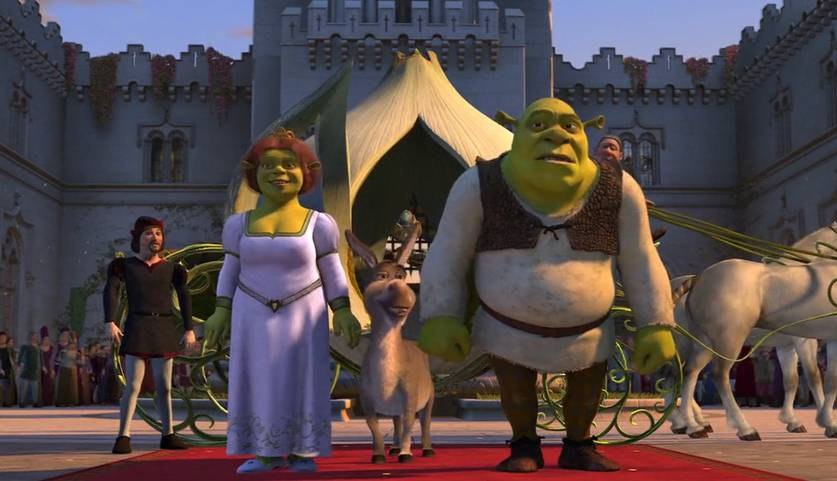
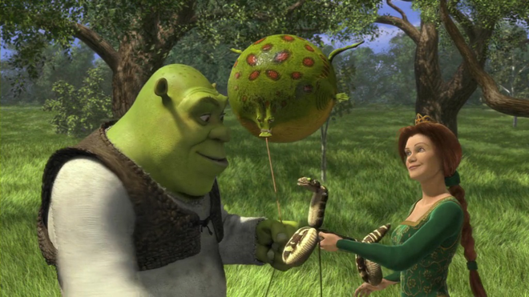
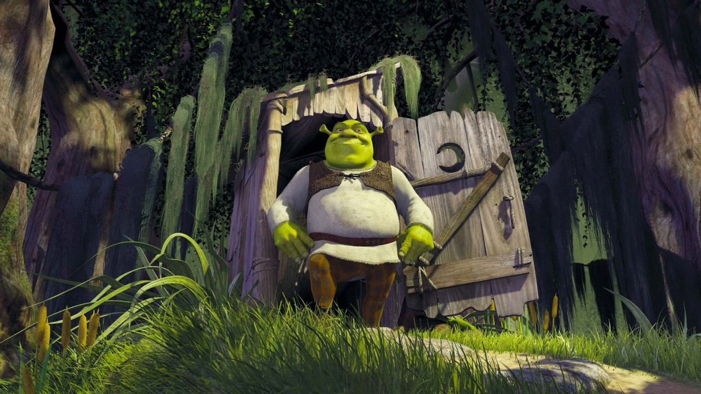

Shrek
Sinopse:
Em um pântano distante vive Shrek (Mike Myers), um ogro solitário que vê, sem mais nem menos, sua vida ser invadida por uma série de personagens de contos de fada, como três ratos cegos, um grande e malvado lobo e ainda três porcos que não têm um lugar onde morar. Todos eles foram expulsos de seus lares pelo maligno Lorde Farquaad (John Lithgow). Determinado a recuperar a tranquilidade de antes, Shrek resolve encontrar Farquaad e com ele faz um acordo: todos os personagens poderão retornar aos seus lares se ele e seu amigo Burro (Eddie Murphy) resgatarem uma bela princesa (Cameron Diaz), que é prisioneira de um dragão. Porém, quando Shrek e o Burro enfim conseguem resgatar a princesa logo eles descobrem que seus problemas estão apenas começando.
Elenco:
John Lithgow , Eddie Murphy , Mike Myers , Jim Cummings , Cameron Diaz , Vincent Cassel , Peter Dennis , Clive Pearse , Bobby Block , Chris Miller
Trailer:
- 
- 
- 